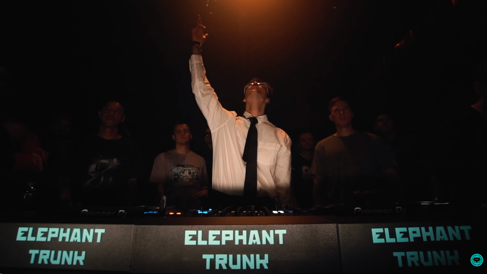
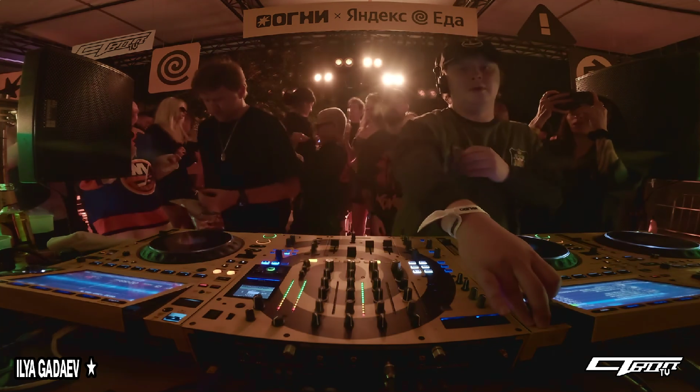
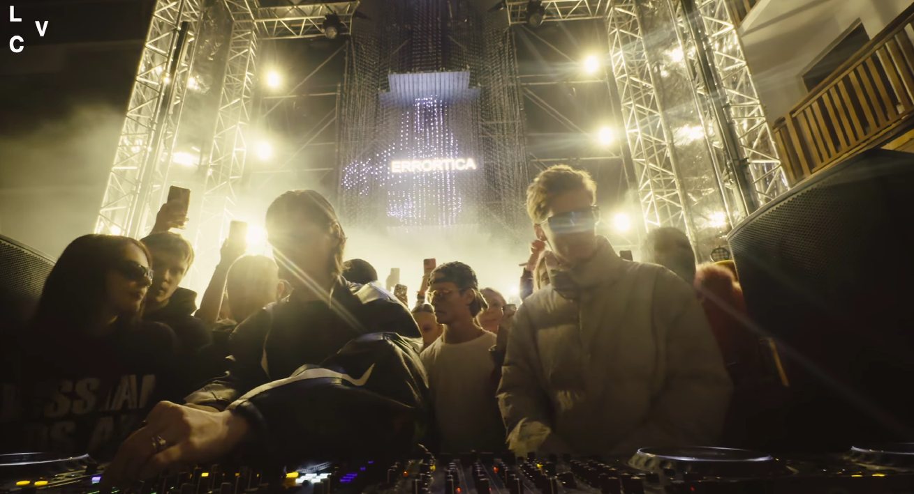
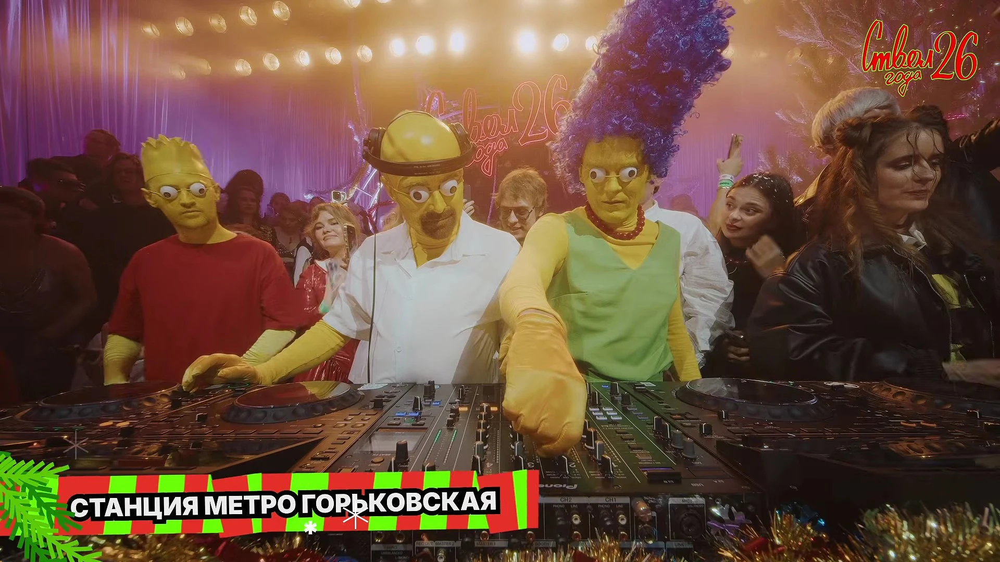

ЧТО ТАКОЕ РОССИЙСКАЯ ЭЛЕКТРОННАЯ СЦЕНА
Российская электронная сцена — это все, кто делает и любит электронную музыку: артисты, диджеи, лейблы, организаторы вечеринок и, конечно, слушатели. Тут есть всё: от танцевального техно и хауса до тягучего эмбиента и ретро-синтвейва. Жанры разные, звучат по-разному и собирают разную публику, но всех объединяет страсть к экспериментам со звуком.
В каждом блоке ниже ты найдёшь короткую историю, пару фактов о том, кто это и чем занимается, и фото с их вечеринок. Если зацепило, жми на кнопку: там список артистов, с биографиями и выступлениями. Слушай всё подряд или выбирай по звуку, а там как пойдёт: возможно, один из них станет твоим новым любимым.
ELEPHANT TRUNK

Elephant Trunk — лейбл про драм-н-бейс. Старый импринт у ребят был ещё в 2017 году, но по-настоящему всё закрутилось в 2021-м: бренд обновили, а в мае устроили первую вечеринку под новым названием.
На лейбле выходят ozma, Tasha Baxter, Ryan Audley, Chillhomers, Onebyone и MAGE. А ещё у них свои вечеринки, например Label Night 2.0 и «Свежая Кровь».
АРТИСТЫ ЛЕЙБЛАСТВОЛ

«Ствол» запустили в 2021 году ребята из Cream Soda: Дима Нова и Илья Гадаев. По их словам, это не коммерческая контора, а тусовка единомышленников, которые помогают друг другу с промо, клипами и подачей.
Здесь выходят Cream Soda, «Лучший Друг», «Лауд», Ella и Lurmish. Жанры разные: от «умной электроники» до попа и хип-хопа.
АРТИСТЫ ЛЕЙБЛАSYSTEM 108

System 108 — лейбл и промогруппа, которую в 2015 году основал продюсер Евгений Машков. Тут выпускаются электронные музыканты: Errortica, Kito Jempere, Philipp Gorbachev, Simple Symmetry, Sputnik и другие.
Кроме релизов, они проводят шоукейсы System One Hundred and Eight, а ещё у них есть проект «Диско Клуб», который сделан вместе с фотостудией White Studios.
АРТИСТЫ ЛЕЙБЛАСТАНЦИЯ МЕТРО ГОРЬКОВСКАЯ

«Станция метро Горьковская» — это не станция, а компания диджеев из Нижнего Новгорода: Макс Буяков, Саша Красов (DJ Kras) и Антон Бардин. Всё началось в январе 2021 года с вечеринки, адрес которой разослали по SMS: пришло человек триста.
Раньше они играли рэп, а теперь делают драм-н-бейс, UK garage и брейкс. Выпускают музыку на своём лейбле GRK MUSIC, играют в Москве и на фестивалях, а в 2026 году их сет в масках из «Симпсонов» разлетелся по соцсетям.
АРТИСТЫ ЛЕЙБЛА